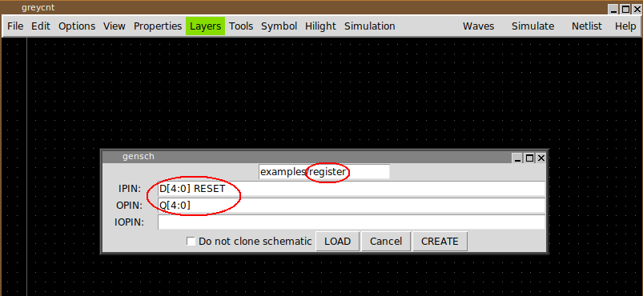
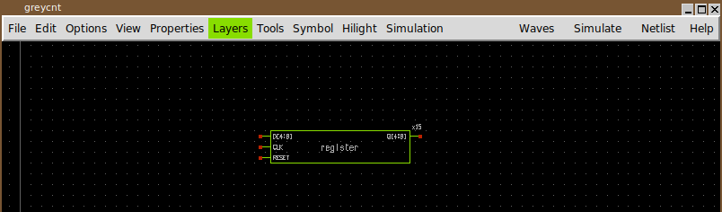
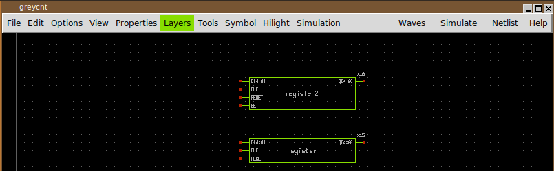
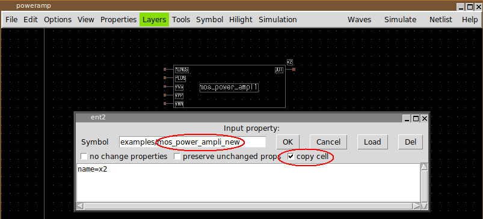
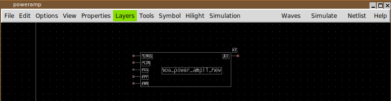

CREATING SYMBOLS
An easy way to create a new symbol and instantiate the new component in the schematic is to press the <shift>j key. This will bring up a symbol creation dialog box:
After setting the name of the symbol (do not forget this and be careful not to overwrite existing symbols), the set of input, output or input-output pins (inout) press the CREATE button. The symbol will be created together with the corresponding schematic representation. The schematic will be empty and contains only the interface pins.
if the <shift>j keybind is pressed after selecting an existing symbol, its name and interface pins will be populated into the dialog box text fields, allowing to make changes: in the example picture we are creating a register2 component which has also a SET pin in addition to the register component interface:


the automatic population of pins and symbol name in the dialog box works if the selected symbol has an underlining schematic view. This is where the symbol generation procedure looks for pins.
the LOAD button allows to load the interface pins from a symbol not present in the schematic: write the library and symbol in the top text field and press LOAD. The Do not clone schematic checkbox tells XSCHEM not to copy the schematic view from the previously selected component, but instead to create a new (empty) schematic with only the interface pins. If this checkbox is not enabled XSCHEM tries its best to copy the schematic from the selected component into the new component, adding or removing the changed pins.
creating a new symbol and schematic by cloning
another useful approach to create a new component (both symbol and schematic view) is to 'clone' it from a similar existing component: after copying a component to a different place in the schematic, press the edit property bindkey (q key) and set a new name for the symbol, set also the copy cell checkbox:
After pressing OK a copy (both schematic and symbol views) of the previously selected component will be created. After this clone operation modifications can be made on the newly created schematic and symbol views without affecting the original component.
